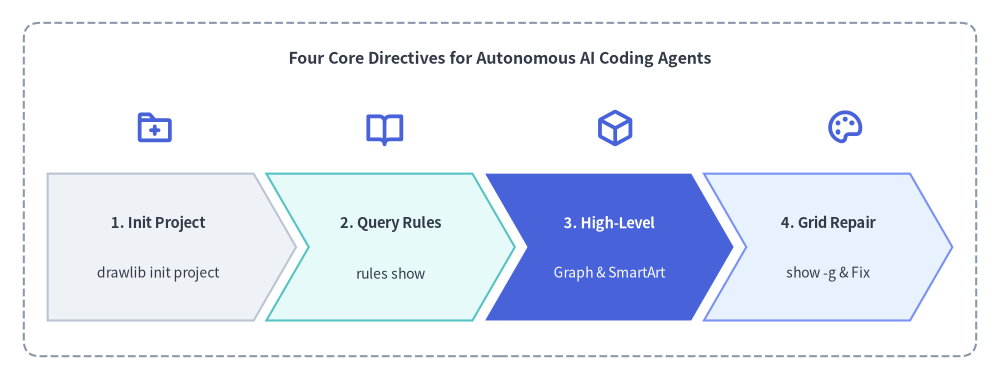
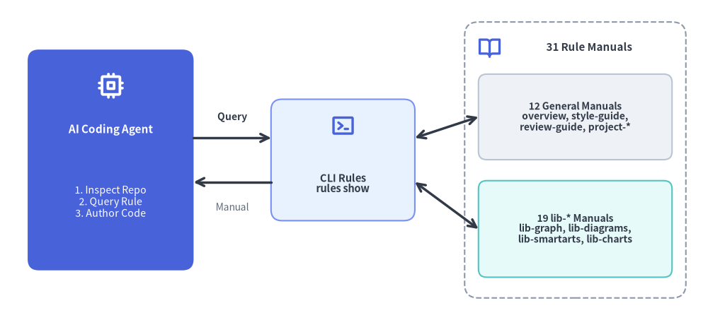

AI Agent Instructions & Prompt Engineering
Drawlib was built from the ground up for the era of AI-assisted engineering. Instead of asking Large Language Models (LLMs) to construct thousands of lines of fragile SVG path strings or brittle Matplotlib code, Drawlib gives AI agents a clean, high-level, declarative Python vocabulary designed for zero-shot architectural visualization.

Source Code
from drawlib.canvas import save, setup
from drawlib.icons import phosphor
from drawlib.shapes import rectangle
from drawlib.smartarts import ChevronProcess
from drawlib.styles import Styles
from drawlib.text import text
setup(width=126, height=48)
rectangle((63, 24), width=120, height=42, style=Styles.MutedDashed.patch(shape_r=2.0))
text((63, 40.5), "Four Core Directives for Autonomous AI Coding Agents", style=Styles.DarkBold.patch(text_size=11.5))
# Stage Icons above ChevronProcess
icons = [
(19.5, phosphor.folder_plus),
(48.5, phosphor.book_open),
(77.5, phosphor.cube),
(106.5, phosphor.palette),
]
for ix, icon_fn in icons:
icon_fn((ix, 31.8), width=5.0, style=Styles.PrimaryBold)
workflow = ChevronProcess(
style=Styles.Neutral,
text_style=Styles.DarkBold.patch(text_size=10.5),
description_style=Styles.Dark.patch(text_size=10.0),
corner_angle=60.0,
spacing=1.6,
flat_left_end=True,
)
workflow.add("1. Init Project", description="drawlib init project")
workflow.add("2. Query Rules", description="rules show", style=Styles.SecondaryNeutral)
workflow.add(
"3. High-Level",
description="Graph & SmartArt",
style=Styles.PrimaryFlat,
text_style=Styles.WhiteBold.patch(text_size=10.5),
description_style=Styles.White.patch(text_size=10.0),
)
workflow.add("4. Grid Repair", description="show -g & Fix", style=Styles.PrimaryNeutral)
workflow.draw(xy=(6, 7.5), width=114, height=18.5)
save()
1. Why Drawlib is Ideal for AI Agents
- Deterministic Geometry: Unlike heuristic layout engines (e.g. Graphviz, PlantUML) that scramble diagrams unexpectedly when a label changes, Drawlib uses a predictable Cartesian coordinate system where
(0, 0)is anchored at the bottom-left. - High-Level Domain Abstractions: AI agents can instantiate enterprise architecture topologies, UML class models, and data charts in fewer than 20 lines of Python.
- On-Demand Knowledge Retrieval: Drawlib includes a built-in terminal rules catalog (
drawlib rules show <topic>). Agents can fetch targeted API specifications on demand without consuming valuable context window space with massive upfront manuals.
2. One-Command Agent Instruction Setup (drawlib init agent)
Instead of manually copying prompt snippets or hand-crafting tool-specific YAML frontmatter, generate ready-to-use Drawlib instruction files directly for your AI coding assistant using drawlib init agent (in Go, Rust, TypeScript, or zero-install repositories without a Python pyproject.toml, replace uv run drawlib with uvx drawlib):
# Synopsis (use `uvx drawlib ...` in zero-install or non-Python repositories):
# uv run drawlib init agent <antigravity|claude|cursor|copilot|windsurf|cline|roo|codex|gemini|all|list> [-m <auto|always>] [-d <dir>] [-f]
# List all supported AI coding agents, output paths, and formats:
uv run drawlib init agent list
# Generate rules for specific AI coding agent(s) (default --mode auto):
uv run drawlib init agent antigravity
uv run drawlib init agent claude cursor copilot
# Auto-detect existing agent directories/files in your repository:
uv run drawlib init agent --detect
# Use unconditional ("always-on") loading for dedicated documentation repositories:
uv run drawlib init agent antigravity --mode always
# Overwrite/refresh existing rule files or marker blocks (-f / --force), or target another workspace (-d):
uv run drawlib init agent antigravity --force
uv run drawlib init agent codex -d ./my-service --force
# Generate all 7 modular per-agent rule files, or install to user global config:
uv run drawlib init agent all
uv run drawlib init agent antigravity --global
Target (<agent>) |
Project Output Path | Global Path (-g) |
Format & Frontmatter Behavior |
|---|---|---|---|
antigravity |
.agents/rules/drawlib.md (or .agent/rules/drawlib.md if .agent/ exists) |
~/.gemini/config/rules/drawlib.md |
YAML frontmatter (trigger: model_decision in auto, always_on in always) |
claude |
.claude/rules/drawlib.md |
~/.claude/rules/drawlib.md |
Modular Markdown rule coexisting safely with root CLAUDE.md |
cursor |
.cursor/rules/drawlib.mdc |
(IDE settings) | MDC frontmatter (description, alwaysApply: false in auto / true in always) |
copilot |
.github/instructions/drawlib.instructions.md |
(IDE/GitHub settings) | YAML frontmatter (description, applyTo scoped globs in auto / "**" in always) |
windsurf |
.windsurf/rules/drawlib.md |
~/.codeium/windsurf/memories/global_rules.md |
Compact < 12,000-char rule with YAML trigger frontmatter (marker-merged in global) |
cline |
.clinerules/drawlib.md |
~/Documents/Cline/Rules/drawlib.md |
Modular Markdown toggleable individually in the Cline Rules UI |
roo |
.roo/rules/drawlib.md |
~/.roo/rules/drawlib.md |
Modular Roo Code Markdown rule |
codex (alias agents-md) |
AGENTS.md |
~/.codex/AGENTS.md |
Shared Markdown merged non-destructively via <!-- drawlib-agent-instruction:start/end --> |
gemini (alias gemini-md) |
GEMINI.md |
~/.gemini/GEMINI.md |
Shared Markdown merged non-destructively via <!-- drawlib-agent-instruction:start/end --> |
2.1 Activation Modes & Non-Destructive Shared File Merging
- Token-Efficient
autoMode (Default) vs.alwaysMode: By default (--mode auto), frontmatter-capable tools (antigravity,cursor,copilot,windsurf) load Drawlib's instructions on demand when your prompt or touched files involve diagrams, charts, slides, or*_src/documentation projects—saving ~2,500 tokens during unrelated application coding. Pass--mode always(-m always) in dedicated documentation or diagram repositories. - Safe Marker Merging for
AGENTS.md&GEMINI.md: Dedicated modular files (such as.agents/rules/drawlib.mdor.claude/rules/drawlib.md) never touch your existing rootCLAUDE.mdor.github/copilot-instructions.md. For shared single-file targets (codex->AGENTS.md,gemini->GEMINI.md), Drawlib wraps its section in HTML comment markers (<!-- drawlib-agent-instruction:start -->...<!-- drawlib-agent-instruction:end -->), appending safely to existing files and updating only the Drawlib block when re-run with--force(-f). - Programmatic Python API (
drawlib.tools): Automation scripts can invokeinit_agent_instruction(),detect_agent_targets(),get_agent_instruction(), andlist_agent_targets()directly fromdrawlib.tools.
3. Dynamic Knowledge Retrieval (drawlib rules)
Instead of pasting entire documentation manuals into prompts, train your agent to query drawlib rules on demand. Drawlib ships with 31 modular rule manuals (12 general guidelines + 19 library module specifications):

Source Code
from drawlib.canvas import save, setup
from drawlib.icons import phosphor
from drawlib.lines import line
from drawlib.shapes import rectangle
from drawlib.styles import Styles
from drawlib.text import text
setup(width=128, height=58)
# Left: AI Coding Agent
rectangle((20, 29), width=30, height=40, style=Styles.PrimaryFlat.patch(shape_r=2.0))
phosphor.cpu((20, 42.5), width=5.0, style=Styles.WhiteBold)
text((20, 34.5), "AI Coding Agent", style=Styles.WhiteBold.patch(text_size=11.0))
text((20, 21.5), "1. Inspect Repo\n2. Query Rule\n3. Author Code", style=Styles.White.patch(text_size=10.2))
# Center: On-Demand CLI Dispatcher
rectangle((62, 29), width=26, height=22, style=Styles.PrimaryNeutral.patch(shape_r=2.0))
phosphor.terminal_window((62, 35.2), width=4.6, style=Styles.PrimaryBold)
text((62, 24.8), "CLI Rules\nrules show", style=Styles.DarkBold.patch(text_size=10.5))
# Right: 31 Modular Manuals Container
rectangle((104, 29), width=40, height=50, style=Styles.MutedDashed.patch(shape_r=2.5))
phosphor.book_open((88.5, 49.5), width=4.4, style=Styles.PrimaryBold)
text((106.5, 49.5), "31 Rule Manuals", style=Styles.DarkBold.patch(text_size=10.8))
rectangle(
(104, 36.8),
width=35,
height=15.5,
style=Styles.Neutral.patch(shape_r=1.5),
text="12 General Manuals\noverview, style-guide,\nreview-guide, project-*",
text_style=Styles.DarkBold.patch(text_size=10.0),
)
rectangle(
(104, 16.5),
width=35,
height=17.5,
style=Styles.SecondaryNeutral.patch(shape_r=1.5),
text="19 lib-* Manuals\nlib-graph, lib-diagrams,\nlib-smartarts, lib-charts",
text_style=Styles.DarkBold.patch(text_size=10.0),
)
# Connectors
line((35, 33), (49, 33), arrow_head="->", style=Styles.DarkBold)
text((42, 36.8), "Query", style=Styles.DarkBold.patch(text_size=10.0))
line((49, 25), (35, 25), arrow_head="->", style=Styles.DarkBold)
text((42, 20.5), "Manual", style=Styles.Muted.patch(text_size=10.0))
line((75, 33), (86.5, 36.8), arrow_head="<->", style=Styles.DarkBold)
line((75, 25), (86.5, 16.5), arrow_head="<->", style=Styles.DarkBold)
save()
# List all 93 modular rule topics and cache status:
uv run drawlib rules list
# Retrieve targeted manuals:
uv run drawlib rules show agent-instruction # Workflow loop & bootstrap rules
uv run drawlib rules show overview # Cartesian geometry & canvas lifecycle
uv run drawlib rules show style-guide # 6-color semantic system & 50%+ neutral baseline
uv run drawlib rules show review-guide # 3-stage multimodal review loop & 720pt font math
uv run drawlib rules show anim-guide # Animation loop idioms & component patterns
uv run drawlib rules show slide-guide # Slide deck story arc & Dual-Layer rules
uv run drawlib rules show project-overview # 5 project archetypes & decision matrix
uv run drawlib rules show project-images # Standalone images project (images_src/*.py)
uv run drawlib rules show project-doc # Linear document & PDF project (doc_src/*.md)
uv run drawlib rules show project-site # Multi-page documentation website (docs_src/**/*.md)
uv run drawlib rules show project-catalog # 2-column reference & schema catalog (catalog_src/**/*.md)
uv run drawlib rules show project-slide # 1920x1080 slide stage authoring & templates (slide_src/*.md)
uv run drawlib rules show api # Complete API index & symbol cheat sheet
3.1 Complete drawlib rules Topic Catalog
General Guidelines (14 Topics):
| Topic Name | Primary Scope |
|---|---|
agent-instruction |
AI agent bootstrap instructions, project-first rule, and multimodal workflow loop. |
overview |
Canvas lifecycle (setup, clear, save), bottom-left (0, 0) coordinates, and core imports. |
style-guide |
Visual hierarchy, 50%+ neutral baseline rule, 6 semantic colors, and typography sizing. |
review-guide |
Autonomous 3-stage multimodal review loop, 720pt typography scaling, and coordinate anchor table. |
anim-guide |
Animation loop idioms (Re-Draw vs. Mutate) across primitives, SmartArts, charts, diagrams, and graphs. |
slide-guide |
Slide deck story arc, Dual-Layer (::: block vs. ::: note) rule, and visual best practices. |
project-overview |
Architecture of the 5 project archetypes (images, doc, site, catalog, slide), shared files, and cache. |
project-images |
Standalone images project (images_src/*.py -> images/*.png), save() redirection, and grid review. |
project-doc |
Linear technical document & PDF project (doc_src/*.md), 00_cover.md, --toc, and page-break sizing. |
project-site |
Multi-page website (docs_src/**/*.md), navbar.md syntax, Top Hero rule, and drawlib serve --check. |
project-catalog |
2-column catalog & API/CLI/schema reference (catalog_src/**/*.md), auto-extracted H1/H2 sidebar, semantic badges, and / filter. |
project-slide |
16:9 slide stage (1920x1080), ::: block / ::: note syntax, layout templates, and Presenter View. |
cli |
Complete CLI command, flag, and exit code reference manual. |
api |
Comprehensive API index and symbol signature cheat sheet across all drawlib.* modules. |
Library Module Manuals (19 lib-* Topics):
| Topic Name | Target Module | Primary Scope |
|---|---|---|
lib-canvas |
drawlib.canvas |
setup(), clear(), save(), show(), get_dimage(), grid & background styling. |
lib-anim |
drawlib.anim |
Animation(fps), add(), save() (APNG & Animated WebP), fps / frame_rate. |
lib-shapes |
drawlib.shapes |
30 geometric primitives (rectangle, circle, cylinder, cube, document, cloud, brace, gear, math_symbol, arrow, etc.). |
lib-lines |
drawlib.lines |
line(), lines(), line_curved(), lines_curved(), line_arc(), Bezier curves, arrowheads. |
lib-text |
drawlib.text |
text(), text_vertical(), alignment (halign, valign), rotation, and font sizing helpers. |
lib-preset-colors |
drawlib.preset_colors |
DefaultColors, GoogleColors, MonochromeColors, CssColors, RGB/RGBA tuples. |
lib-styles |
drawlib.styles |
Styles and Colors dynamic facade and styles.py / utils.py injection architecture. |
lib-preset-styles |
drawlib.preset_styles |
10 orthogonal style modifiers (Flat, Neutral, Outline, Dashed, etc.) across 6 themes. |
lib-fonts |
drawlib.fonts |
Font, FontRoboto, FontMonoSpace, FontSourceCode, CJK/regional families, FontFile. |
lib-images |
drawlib.images |
image(), Dimage manipulation (trim, fill, alpha, resize), get_dimage_from_code(). |
lib-icons |
drawlib.icons |
phosphor (1,512 vector icons), fontawesome (5 brands), and gcp (212 official cloud icons). |
lib-math |
drawlib.math |
Distance, angle, bounding box, linear/polyline path interpolation, rotation, orthogonal routing. |
lib-types |
drawlib.types |
Style, Color, FontBase, alignment and line-style literal types, .patch() immutability. |
lib-smartarts |
drawlib.smartarts |
ChevronProcess, Cycle, GridLayout, Pyramid, BoxList, BulletPoints, TreeNode, MindMapNode, Table, SourceCode, MonthCalendar, WeekCalendar, DayCalendar. |
lib-charts |
drawlib.charts |
BarChart, LineChart, AreaChart, PieChart, RadarChart, ScatterChart, GanttChart, HeatmapChart, HeatmapOverlay. |
lib-diagrams |
drawlib.diagrams |
ArchitectureDiagram, FlowDiagram, SequenceDiagram, ClassDiagram, ERDiagram, StateDiagram. |
lib-graph |
drawlib.graph |
ArchitectureGraph, LayerGraph, TreeGraph, RadialGraph, GridGraph, get_layout(), GraphLayout. |
lib-tools |
drawlib.tools |
Programmatic Python API for build_*, export_code_block, init_project, init_agent_instruction, serve_docs, list_cache. |
lib-slide |
drawlib.slide |
current_slide, SlideContext, BoundingBox, and build_slide(). |
4. Prompting & Multi-Agent Parallelization Best Practices
When asking an AI agent to generate diagrams or multi-page documentation:
- Provide Real Code Context: Reference actual source files (e.g., "Inspect
src/services/order.pyand draw anArchitectureDiagramshowing its upstream and downstream dependencies"). - Specify Project or Target Document: Indicate whether the diagram belongs in a Markdown page (
docs_src/architecture.md) or a standaloneimages_src/script. - Ask for Multimodal Verification: Remind the agent to render with
-ginto.drawlib/scratch/and visually inspect the output image before finalizing. - Distribute Multi-File Tasks Across Parallel Subagents: Because each multimodal
drawlib show -g+ image review cycle consumes context window tokens, multi-chapter documents (doc_src/*.md), multi-page sites (docs_src/**/*.md), slide decks (slide_src/*.md), and batch scripts (images_src/*.py) should be executed via the 3-Phase Orchestrator–Subagent Protocol:- Phase 1 (Parent Orchestrator): Run
drawlib init project <doc|site|slide|images>, configure shareddrawlib.toml,styles.py,utils.py,_assets/, andnavbar.md(or chapter/slide outline). - Phase 2 (Parallel Subagents): Delegate disjoint
.pyor.mdfiles to parallel subagents. Each subagent authors its assigned files and performs Stage 1 & Stage 2 grid verification using a unique scratch filename (-o .drawlib/scratch/<file_or_block>_grid.png). - Phase 3 (Parent Orchestrator): Run
./build.shonce after all subagents finish, verify links (drawlib serve --check), and perform Stage 3 HTML/PDF visual verification.
- Phase 1 (Parent Orchestrator): Run